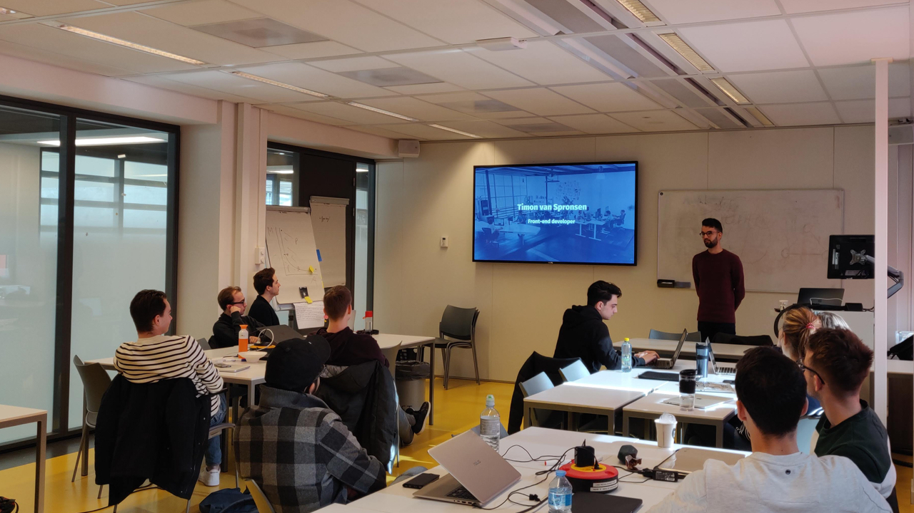

Description
In Frontend 2 we concentrate on improving the knowledge core JavaScript concepts and learn how to progressively enhance interfaces with HTML, CSS & JavaScript. In so called Dev-❤️-Des sessions (based on a method developed by De Voorhoede) multiple frontend components are designed and build.
Program
This course is given at Communication and Multimedia Design, a design bachelor focused on interactive digital products and services. CMD is part of the Faculty of Digital Media and Creative Industries at the Amsterdam University of Applied Sciences.
Gallery
- 
Teachers
Casper Boutens is an front-end developer at de voorhoede. Also a Parttime Teacher for front-end2; a course where students learn about abstract programming principles in JavaScript.
Joost Faber is an front-end lecturer, he also teaches in the Minor Web Development (check it out on GitHub).
Conduct
This course has a Code of Conduct. Anyone interacting with this repository, organisation, or community is bound by it. Staff and students of the Amsterdam University of Applied Sciences (Hogeschool van Amsterdam) are additionally bound by the Regulation Undesirable Conduct (Regeling Ongewenst Gedrag).